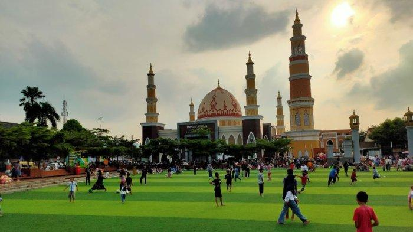
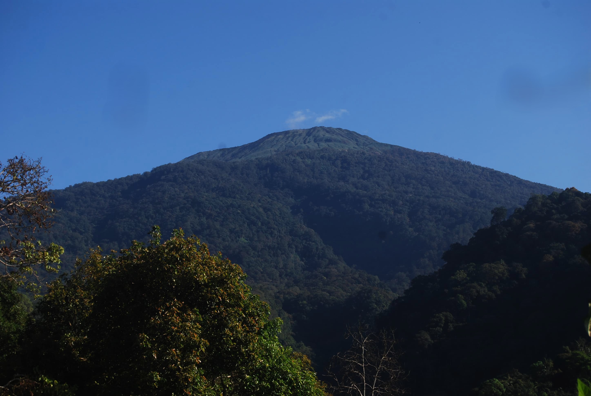
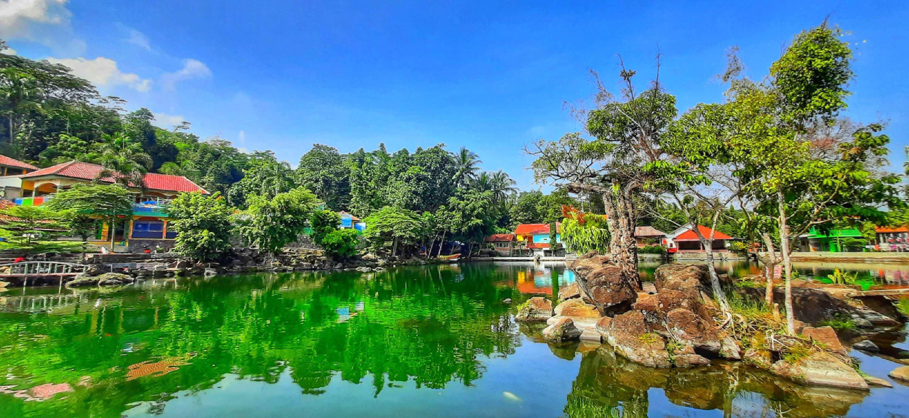
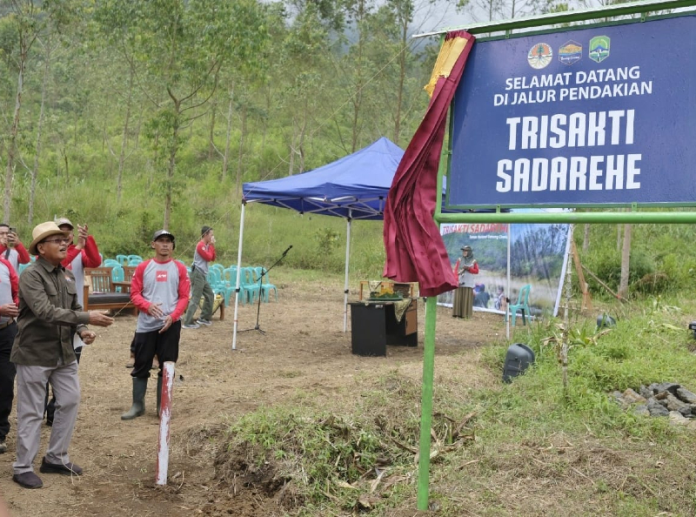
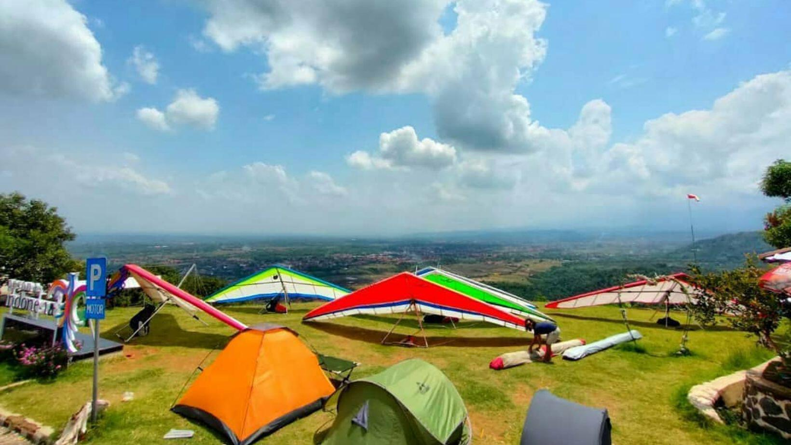
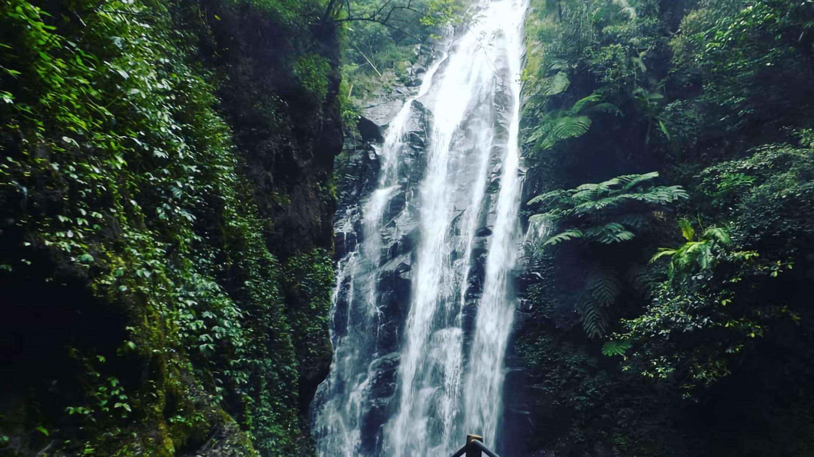
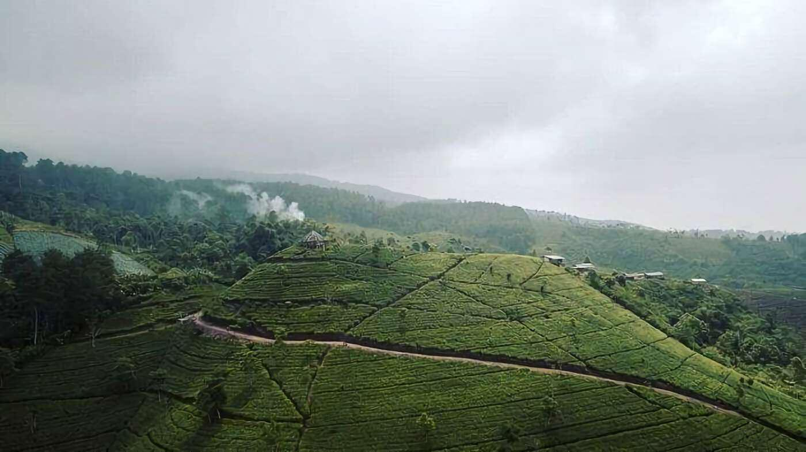

Sejarah

Kabupaten Majalengka (aksara Sunda: ᮙᮏᮜᮦᮀᮊ)
Sebuah wilayah kabupaten yang terletak di Provinsi Jawa Barat, Indonesia. Ibu kotanya adalah kecamatan Majalengka. Kabupaten ini berjarak 95 km sebelah timur laut dari Kota Bandung dan 56 km dari Kota Cirebon.
Nama “Majalengka” sendiri berasal dari dua kata dalam bahasa Cirebon, yaitu “maja” dan “langka”.
Namun, ada versi lain tentang asal usul dari kabupaten ini salah satunya dengan nama ini dengan peristiwa pembabatan pohon maja oleh Nyai Rambut Kasih.
Nyai Rambut Kasih merupakan ratu Kerajaan Sindangkasih yang tidak suka dengan orang Cirebon yang mencari buah maja untuk obat-obatan.
Hal ini menjadi awal mula nama Majalengka. Ketika orang Cirebon datang ke Sindangkasih, mereka tidak menemukan lagi pohon maja.
Oleh karenanya mereka pun berkata “maja-e langka” atau “buah maja hilang”,
Nama ini kemudian digunakan sebagai nama kabupaten baru yang menggantikan kerajaan Sindangkasih setelah penguasanya masuk Islam.
Nama Majalengka kemudian masih digunakan hingga sekarang sejak ditetapkannya oleh koloni Belanda pada 11 Februari 1840.
Sementara itu, sejarah awal kabupaten Majalengka dapat dilacak kembali ke zaman Kerajaan Tarumanegara.
Pada masa itu, daerah Majalengka termasuk dalam wilayah Kerajaan Galuh yang merupakan kerajaan yang terkenal di Jawa Barat,
Pada abad ke-16, Majalengka menjadi bagian dari Kesultanan Cirebon.
Salah satu raja Cirebon yang berkuasa di Majalengka adalah Prabu Geusan Ulun yang mendirikan Kerajaan Talaga pada tahun 1579.
Kerajaan Talaga memiliki pusat pemerintahan di Desa Talaga dan berperan penting dalam penyebaran agama Islam di Jawa Barat.
Pada era kerajaan tersebut menjadikan agama Islam masih bertahan hingga sekarang.
Kemudian pada 1677, Kerajaan Talaga ditaklukkan oleh VOC yang dipimpin oleh Rijcklof van Goens. Sejak saat itu,
Majalengka menjadi bagian dari Hindia Belanda dan mengalami berbagai perubahan administrasi.
Pada awal abad ke-20, Majalengka mulai terlibat dalam pergerakan nasional untuk memperjuangkan kemerdekaan Indonesia dari penjajahan Belanda.
Beberapa tokoh pergerakan nasional yang berasal dari Majalengka antara lain adalah KH Zaenal Mustofa, KH Abdul Halim, KH Ahmad Sanusi, dan KH Abdul Fatah Hasan.
Mereka berperan aktif dalam organisasi-organisasi seperti Sarekat Islam, Muhammadiyah, Nahdlatul Ulama, dan Partai Syarikat Islam Indonesia.
Pada tahun 1942, Jepang menggantikan Belanda sebagai penjajah baru di Indonesia.
Majalengka pun mengalami dampak dari kebijakan-kebijakan Jepang yang represif dan eksploitatif.
Namun sejak memasuki masa kemerdekaan, Majalengka menjadi salah satu wilayah yang cukup maju di Jawa Barat.
Kabupaten majalengka memiliki luas wilayah sekitar 1.204 km persegi dan berpenduduk sekitar 1,2 juta, serta wilayahnya terdiri dari 26 kecamatan dan 281 desa.
Kerajaan Yang Pernah Berdiri Di Majalengka
Kerajaan Talaga Manggung Raden Rangga Mantri atau Prabu Pucuk Umum
Kerajaan Rajagaluh dipimpin oleh Prabu Cakraningrat
Kerajaan Sindangkasih, dipimpin oleh seorang puteri bernama Nyi Rambut Kasih
Kerajaan Wanayasa, dipimipin oleh Prabu Wirapati
Geografis

Secara geografis Kabupaten Majalengka terletak di bagian timur Provinsi Jawa Barat.
Kabupaten Majalengka terletak pada titik koordinat yaitu Sebelah Barat 108° 03'–108° 19 Bujur Timur, Sebelah Timur 108° 12'–108° 25 Bujur Timur,
Sebelah Utara 6° 36'–5°58 Lintang Selatan dan Sebelah Selatan 6° 43'–7°44.
Batas wilayah
Bagian Utara wilayah kabupaten ini merupakan dataran rendah,
sementara wilayah tengah berbukit-bukit dan wilayah selatan merupakan wilayah pegunungan
dengan puncaknya Gunung Ceremai yang berbatasan dengan Kabupaten Kuningan serta
Gunung Cakrabuana yang berbatasan dengan Kabupaten Tasikmalaya dan Kabupaten Sumedang.
Topografi dan Geografi
Bagian utara wilayah kabupaten ini adalah dataran rendah, sedang di bagian selatan berupa pegunungan.
Gunung Ciremai (3.076 m) berada di bagian timur, yakni di perbatasan dengan Kabupaten Kuningan.
Gunung ini adalah gunung tertinggi di Provinsi Jawa Barat, dan merupakan taman nasional, dengan nama Taman Nasional Gunung Ciremai.
Morfologi dataran rendah yang meliputi Kecamatan Kadipaten, Kasokandel, Panyingkiran, Dawuan,
Jatiwangi, Sumberjaya, Ligung, Jatitujuh, Kertajati, Cigasong, Majalengka, Leuwimunding dan Palasah.
Kemiringan tanah di daerah ini antara 5%-8% dengan ketinggian antara 20–100 m di atas permukaan laut (dpl), kecuali di Kecamatan Majalengka tersebar beberapa perbukitan rendah dengan kemiringan antara 15%-25%.
Morfologi berbukit dan bergelombang meliputi Kecamatan Rajagaluh dan Sukahaji sebelah Selatan,
Kecamatan Maja, sebagian Kecamatan Majalengka. Kemiringan tanah di daerah ini berkisar antara 15-40%,
dengan ketinggian 300–700 mdpl.
Morfologi perbukitan terjal meliputi daerah sekitar Gunung Ciremai, sebagian kecil Kecamatan Rajagaluh,
Argapura, Sindang, Talaga, sebagian Kecamatan Sindangwangi, Cingambul, Banjaran, Bantarujeg, Malausma, Lemahsugih,
dan Kecamatan Cikijing bagian Utara. Kemiringan di daerah ini berkisar 25%-40% dengan ketinggian antara 400–2000 m di atas permukaan laut.
Wisata
Ada banyak tempat wisata Majalengka menarik yang bisa Anda kunjungi
saat liburan bersama keluarga maupun solo traveling. Berikut ini beberapa diantaranya:
Telaga Herang

Obyek wisata Telaga Herang di Sindangwangi Majalengka Jawa barat adalah salah satu
tempat wisata yang berada di Padaherang, Sindangwangi, Kabupaten Majalengka, Jawa Barat, Indonesia.
Telaga Herang adalah tempat wisata yang ramai dengan wisatawan pada hari biasa maupun hari liburan.
Tempat ini sangat indah dan bisa memberikan sensasi yang berbeda dengan aktivitas kita sehari hari.
Telaga Herang memiliki pesona keindahan yang sangat menarik untuk dikunjungi.
Sangat disayangkan jika kamu berada di Kota Majalengka tidak mengunjungi wisata alam yang mempunyai keindahan yang tiada duanya tersebut.
Pendakian Gunung Cereme atau Ciremai

Gunung Ciremai merupakan gunung api soliter dengan kawah ganda ( barat dan timur) dengan radius 600 meter dan kedalaman 250 meter.
Ketinggian Gunung Ciremai mencapai 3.078 m dpl merupakan gunung tertinggi di Jawa Barat.
Jalur Pendakian Gunung Ciremai:
| Apuy |
Desa Argamukti, Majalengka |
| Trisakti Sadarehe |
Desa Payung, Majalengka |
| Palutungan |
Desa Cisantana, Kuningan |
| Linggarjati |
Desa Linggarjati, Kuningan |
| Linggasana |
Desa Linggasana, Kuningan |
Paralayang Gunung Panten

Gunung Panten adalah tempat wisata yang tak jauh dari Kota Majalengka.
Datang ke sini rasanya seperti wisata di atas langit.
Warga setempat menyebutnya Gunung Paralayang karena menjadi spot olahraga paralayang.
Objek wisata ini dirintis sejak tahun 2010. Dibukanya objek wisata ini didukung oleh Pemkab Majalengka.
Tercatat sudah dua kali diselenggarakannya kejuaraan nasional paralayang dan satu kejuaran nasional gantole di tempat ini.
Naik daunnya spot paralayang ini bahkan sampai menarik minat atlet paralayang internasional.
Curug Muara Jaya

Curug Muara Jaya adalah air terjun yang menjadi bagian dari aliran Sungai Muara Jaya.
Air terjun ini bisa ditemukan di kawasan lereng Gunung Ciremai.
Jaraknya hanya sekitar 20 km dari Kota Majalengka.
Meski berada di lembah dan memerlukan sedikit tenaga ekstra untuk mencapainya, namun air terjun ini tetap populer sebagai lokasi piknik.
Aliran airnya cukup deras dan meluncur di permukaan berbatu-batu yang mempertegas lekuknya, menambah keindahan air terjun ini.
Perkebunan Teh Cipasung

Hamparan hijau dari daun teh bisa menyegarkan pernapasan karena udaranya sangat sejuk sekali.
Kebun teh ini memiliki luas hingga 58 hektare dan kita bisa berkeliling sambil mengabadikan pemandangan dengan berfoto di tengah hamparan daun teh yang sangat hijau.
Selesai berfoto sepuasnya, Moms bisa menikmati secangkir teh panas yang dijual di warung dekat Kebun Teh Cipasung.
Kebun Teh Cipasung berlokasi di Cipasung, Kabupaten Majalengka.
Tradisi

Majalengka merupakan surganya dunia karena menyimpan banyak destinasi wisata indah nan asri di sana.
Namun, banyaknya destinasi wisata tidak mengalahkan beragam tradisi dan adat istiadat yang dimiliki oleh Majalengka. Setidaknya ada 4 tradisi yang masih ada hingga saat ini.
Mapag Tamba

Mapag Tamba merupakan suatu tradisi dan adat istiadat yang dilakukan oleh warga di Majalengka
untuk mengawali musim tanam baru.Tradisi ini masih rutin dilakukan khususnya masyarakat Desa Pilangsari,
Kecamatan Jatitujuh, Kabupaten Majalengka.
Dalam tradisi Mapag Tamba, para warga akan memutari setiap pelosok desa dengan berjalan kaki.
Warga melakukan tradisi ini dimulai dengan berkumpul di kantor desa sekitar pukul 08.00 WIB
kemudian berjalan kaki hingga menjelang tengah hari atau sekitar pukul 11.00 WIB.
Mapag Sri atau Munjungan

Bila disederhanakan mapag berarti menjemput, sedangkan sri yang dimaksud adalah padi.
Sehingga, tradisi Mapag Sri yang dilakukan oleh masyarakat Majalengka ini memiliki arti
bahwa para petani akan menjemput padi (masa panen).
Tradisi ini diartikan sebagai wujud rasa syukur para petani kepada Tuhan yang Maha Esa
atas hasil panen padi yang berlimpah. Dalam pelaksanaan tradisi Mapag Sri dimulai sejak pagi hari.
Seluruh petani akan berkumpul di kantor desa kemudian selanjutnya akan menuju ke sawah.
Setelah tiba di sawah, dilakukan pemotongan tanaman padi oleh sesepuh desa,
kemudian lanjut oleh kepala desa. Setelah itu, biasanya sebagai hiburan,
tradisi Mapag Sri atau Munjungan akan ditutup oleh pertunjukan wayang kulit.
Guar Bumi atau Sedekah Bumi

Tradisi itu merupakan tradisi turun-temurun dari masyarakat yang selalu dilaksanakan ketika memasuki awal musim
tanam dan hampir sama dengan tradisi Mapag Tamba. Namun, dalam prosesi ini hanya diwakili 7 orang.
Ketujuh orang tersebut akan melakukan ritual untuk memohon kepada Allah SWT agar selalu diberi kemudahan
dan kelancaran serta tidak ada hambatan dalam proses awal penanaman.
Selain itu, mereka juga memohon kepada Allah SWT agar diberikan hasil panen yang melimpah.
Mandi di Sumur Keramat saat Bulan Mulud

Tradisi Majalengka yang terakhir adalah aktivitas mandi di sumur keramat di akhir bulan Rabiul Awal
(bulan hijriyah) atau bulan Mulud (bulan Jawa).
Sumur yang dikeramatkan ini diyakini masyarakat desa sebagai sumur tertua
bahkan sebelum desa tempat tinggal mereka ada, sumur ini sudah lebih dulu ada.
Sumur ini berada di desa Pilangsari, kabupaten Majalengka.
Mandi di sumur keramat diyakini oleh para warga Majalengka sebagai tradisi
untuk membersihkan jiwa dan raga dalam menyambut bulan yang suci tersebut yaitu bulan
kelahiran Kanjeng Nabi Muhammad Saw.